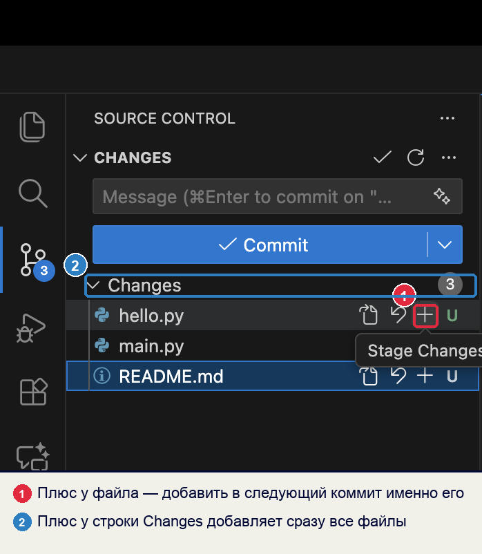

Справочник по Git и GitHub · модуль 1 · что такое контроль версий
Глава 1.3
Как Git
хранит историю
Git складывает содержимое файлов в папку .git и даёт каждому куску имя, вычисленное из самого содержимого. В главе это устройство разобрано на настоящем репозитории: все выводы получены запуском команд, а не придуманы.
- Категория
- Устройство инструмента
- Уровень
- Начальный, с заглядыванием внутрь
- Связанные темы
- Коммит, индекс, ветки
- Зачем это знать
- Понимать, что происходит при нажатии Commit и почему историю нельзя подменить
§1Учебный репозиторий
Всё, что показано дальше, сделано в одном маленьком репозитории: два файла и два коммита. Этого хватает, чтобы увидеть устройство целиком.
git init # создали privet.txt и README.md git add . git commit -m "Первый коммит: приветствие и описание" # дописали в privet.txt вторую строку git add privet.txt git commit -m "Добавлена вторая строка"
ac70c9b Добавлена вторая строка 4aaadb4 Первый коммит: приветствие и описание
Семь символов слева — начало хеша коммита, его полного имени. Откуда берётся такое имя — §4.
§2Что лежит в папке .git
После git init в папке проекта появляется скрытый каталог .git. Этот каталог и есть репозиторий: рабочие файлы лежат рядом, как обычно, а вся история — внутри него.
COMMIT_EDITMSG HEAD config description hooks index info logs objects refs
Нужны четыре записи, остальные служебные:
| Запись | Что это |
|---|---|
objects | Хранилище содержимого: все версии всех файлов и сами коммиты |
refs | Ветки и метки — по файлу на каждую, внутри один хеш |
HEAD | Файл с одной строкой: на какой ветке вы сейчас находитесь |
index | Индекс — список того, что войдёт в следующий коммит |
Удалите .git — исчезнет вся история, останутся только текущие файлы. Отменить это нельзя. Заглядывать внутрь можно и полезно, а редактировать файлы вручную не нужно: для всех изменений есть команды и кнопки.
§3Снимок вместо разницы
Большинство старых систем контроля версий хранили разницу: первая версия файла целиком, а дальше — список строк, которые добавили и убрали. Чтобы получить состояние на прошлый вторник, такая система брала исходный файл и применяла к нему все изменения по очереди.
Git устроен иначе. При каждом коммите он сохраняет содержимое файлов целиком — как фотографию всего проекта на этот момент. Файл не изменился с прошлого раза — новая копия не создаётся, коммит просто ссылается на уже сохранённую.
Как было: цепочка изменений
Так работали RCS, CVS и Subversion. Чем дальше версия от начала, тем больше шагов нужно проделать, чтобы её собрать.
Как в Git: снимки состояний
Любое состояние берётся сразу, без пересчёта цепочки. Место при этом не расходуется впустую: одинаковое содержимое хранится один раз.
Переключение между версиями — выкладывание готового снимка, а не вычисление. Отсюда скорость, о которой шла речь в главе 1.1.
§4Хеш: имя из содержимого
Каждому куску содержимого нужно имя. Git не нумерует версии, а вычисляет имя из самого содержимого функцией SHA-1. Такая функция называется хеш-функцией: она берёт данные любой длины и выдаёт строку фиксированной длины, 40 шестнадцатеричных символов.

{kind=link}
Команда git hash-object считает имя для содержимого, ничего никуда не записывая:
echo "Привет, мир!" | git hash-object --stdin echo "Привет, мир" | git hash-object --stdin # убрали восклицательный знак echo "привет, мир!" | git hash-object --stdin # строчная «п»
Три следствия:
- Одинаковое содержимое — одинаковое имя. Один и тот же текст в двух файлах сохранится в хранилище один раз.
- Любая правка меняет имя целиком. Не на один символ — полностью, как видно в таблице.
- По имени можно проверить содержимое. Посчитали хеш заново, сравнили с именем — и точно знаете, что данные не испортились и не подменены.
Ассоциация: отпечаток пальца
Отпечаток не выдают по порядку и не присваивают — он снимается с самого человека. По отпечатку нельзя восстановить человека, но можно проверить, тот ли это.
Хеш снимается с содержимого. По нему нельзя восстановить текст, но можно проверить, что перед вами тот самый текст: посчитали заново и сравнили.
Где не совпадаетОтпечаток человека не меняется всю жизнь. Хеш меняется от любой правки: исправили одну букву — получили другое имя, и Git считает это другим содержимым.
Полное имя — 40 символов, но в журнале и в интерфейсе показывают первые семь: ac70c9b. Этого хватает, чтобы отличить коммит от соседних, а перепутать два коммита с одинаковым началом в учебном проекте невозможно. Если начало совпадёт, Git попросит написать больше символов.
§5Четыре вида объектов
Всё, что Git хранит в objects, — это объекты четырёх видов. Каждый лежит под своим хешем.
| Вид | Что хранит | Пример из нашего репозитория |
|---|---|---|
blob | Содержимое файла, без имени и без прав доступа | текст privet.txt |
tree | Список: имя файла или папки → хеш её содержимого | корень проекта с двумя файлами |
commit | Ссылку на дерево, родителя, автора, дату и пояснение | ac70c9b |
tag | Помеченный коммит с подписью — метка версии | в учебном репозитории нет |
Команда git cat-file -p печатает содержимое объекта по его имени:
git cat-file -p HEAD
tree 24b4504ba08ad760134a32ff97c80172a54588d8 parent 4aaadb41d076a53a1805396518b7d9989fc0ee4c author Иван Петров <ivan@example.com> 1789542720 +0300 committer Иван Петров <ivan@example.com> 1789542720 +0300 Добавлена вторая строка
Коммит — записка из пяти частей: на какое дерево он указывает, какой коммит был перед ним, кто автор, кто зафиксировал и что сделано. Самих файлов внутри нет, есть ссылка на дерево:
100644 blob 2f772b5ac1dca38c2e8cadd921541cdd51c164b7 README.md 100644 blob 87aef6aa7495837046c161ace26b2115d4e7c84f privet.txt
Дерево — это оглавление: имя файла и хеш его содержимого. А по хешу лежит сам текст:
Привет, мир! Вторая строка.
Цепочка ссылок: коммит → дерево → содержимое файлов. Каждое звено названо по своему содержимому.
Объекты, которые накопил репозиторий из двух коммитов:
3 blob # README.md, privet.txt в двух версиях 2 tree # корень проекта на момент каждого коммита 2 commit # сами коммиты
README.md между коммитами не менялся, поэтому его содержимое лежит в хранилище один раз, и оба дерева ссылаются на один и тот же blob.
§6Цепочка коммитов
Строка parent в выводе cat-file и составляет историю: каждый коммит помнит предыдущий, и от последнего можно дойти до самого первого. У первого коммита строки parent нет — ему некуда ссылаться:
tree 278ffdf57274af9c5f63a8ee7851a4993d58ed7a
author Иван Петров <ivan@example.com> 1789542000 +0300
committer Иван Петров <ivan@example.com> 1789542000 +0300
Первый коммит: приветствие и описание
Имя коммита вычисляется из его содержимого, а в содержимое входит имя родителя. Значит, изменить что-то в старом коммите, не тронув все последующие, невозможно: у старого сменится имя, и ссылка из следующего перестанет быть верной.
§7Опыт: меняем старый коммит
В учебном репозитории уберём из пояснения первого коммита два слова. Код при этом не трогаем.
ac70c9b Добавлена вторая строка 4aaadb4 Первый коммит: приветствие и описание
19b02ae Добавлена вторая строка 23395b4 Первый коммит: приветствие
Второй коммит не редактировали, а его имя изменилось — с ac70c9b на 19b02ae. Так работает защита истории: правка в любой точке отзывается на всех коммитах после неё. Подменить строку в коммите годовой давности незаметно нельзя — изменится каждое имя вплоть до последнего, и это видно всем, у кого есть копия репозитория.
Из этого свойства следует правило, о котором пойдёт речь в третьем модуле: коммиты, уже отправленные на GitHub, не переписывают. У коллег останется прежняя цепочка имён, у вас — новая, и Git не сможет их совместить. Пока коммиты лежат только на вашем компьютере, менять их безопасно.
§8Три места и три состояния файла
Коммит собирается не прямо из папки проекта. Между папкой и хранилищем стоит индекс — список того, что войдёт в следующий коммит. Получается три места, в которых одновременно живут файлы проекта.
Все три состояния сразу: в учебном репозитории дописана третья строка в privet.txt, файл подготовлен к коммиту, а созданный рядом zametki.txt не тронут.
On branch main Changes to be committed: (use "git restore --staged <file>..." to unstage) modified: privet.txt Untracked files: (use "git add <file>..." to include in what will be committed) zametki.txt
Git разделил файлы на две группы. privet.txt подготовлен — он попадёт в следующий коммит. zametki.txt назван untracked, то есть неотслеживаемым: Git видит файл в папке, но ничего о нём не знает и в коммит не возьмёт, пока не попросят.

Ассоциация: корзина в магазине
Вы ходите по залу и кладёте в корзину то, что решили купить. Что-то берёте в руки, рассматриваете и ставите обратно на полку. На кассе оплачивается ровно содержимое корзины, а не весь магазин.
Зал — папка проекта, корзина — индекс, касса — коммит. Кнопка с плюсом кладёт файл в корзину, минус возвращает на полку. Коммит фиксирует то, что лежит в корзине на этот момент.
Где не совпадаетТовар из корзины исчезает с полки. Файл остаётся в папке и после подготовки — его можно править дальше, и тогда в корзине окажется прежняя версия, а в папке новая.
Промежуточная ступень нужна потому, что за один заход обычно правится несколько разных вещей. Индекс позволяет собрать коммит из части правок: исправление ошибки — отдельно, заметки для себя — потом или никогда.
§9Ветка — это указатель
Ветка внутри — текстовый файл с одной строкой. Вот ветка main учебного репозитория:
ac70c9bc848f367d592ed7fbe4378dcf9a9f9c34
Внутри — имя одного коммита, последнего в этой линии. Остальное Git узнаёт по цепочке parent. Отсюда дешевизна веток: создать ветку значит записать 40 символов в новый файл, а не скопировать проект.
А где находитесь вы сами, хранит файл HEAD:
ref: refs/heads/main
Строка читается так: «сейчас я на ветке main». Переключение на другую ветку меняет эту строку и выкладывает в рабочую папку файлы из её последнего коммита. Никакого копирования папок при этом не происходит — поэтому переключение занимает доли секунды.
§10Что происходит при коммите
Что делает Git при нажатии Commit в VS Code:
- Берёт содержимое каждого подготовленного файла и сохраняет его как объект
blobпод именем-хешем. Если такое содержимое уже есть — ничего не записывает. - Строит объект
tree— оглавление проекта: имя файла или папки и хеш содержимого. - Создаёт объект
commit: ссылка на дерево, ссылка на предыдущий коммит, автор, дата и ваше пояснение. - Считает хеш этого коммита и записывает его в файл ветки — теперь она указывает на новый коммит.
- Очищает индекс: подготовленных изменений больше нет, они стали частью истории.
Всё это происходит на вашем диске и занимает доли секунды. Сеть на этом этапе не нужна: отправка на GitHub — отдельное действие.
§11Частые заблуждения
§12Проверьте себя
Вы скопировали один и тот же текст в два файла с разными именами. Сколько объектов blob создаст Git?
Один. Имя объекта вычисляется из содержимого, а содержимое одинаковое — значит, и хеш совпадёт. Имена файлов хранятся не в blob, а в дереве: там будут две записи, указывающие на один и тот же объект.
Почему нельзя незаметно исправить коммит месячной давности?
В хеш коммита входит имя его родителя. Поправив старый коммит, вы измените его имя — и все коммиты после него получат новые имена, потому что каждый ссылается на предыдущий. Изменится вся цепочка до последнего коммита, и это видно любому, у кого есть копия репозитория.
Что произойдёт, если удалить папку .git?
Останутся текущие файлы проекта и ничего больше: ни истории, ни веток, ни возможности вернуться к прошлому состоянию. Папка проекта превратится в обычную папку. Восстановить историю можно будет только из другой копии репозитория — например, с GitHub.
Чем состояние «изменён» отличается от «подготовлен»?
«Изменён» — файл правили в рабочей папке, но в следующий коммит он не войдёт. «Подготовлен» — файл добавлен в индекс кнопкой с плюсом и войдёт в коммит, который вы сейчас создадите. Между этими состояниями файл можно править дальше: тогда он окажется в обоих сразу — подготовлена старая версия, в папке лежит новая.
Почему создание ветки в Git происходит мгновенно?
Ветка — файл с одним хешем: именем коммита, на который она указывает. Создание ветки записывает 40 символов, не копируя ни файлы, ни историю. Само содержимое уже лежит в хранилище и общее для всех веток.
Объясните своими словами, зачем Git показывает первые семь символов хеша, а не весь.
Полное имя из сорока символов нужно программе, а человеку достаточно короткого начала, чтобы отличить один коммит от другого и назвать его в разговоре или команде. Если начало окажется одинаковым у двух коммитов, Git сообщит об этом и попросит указать больше символов.
§13Шпаргалка по главе
снимки, а не разница
одинаковое содержимое — один раз
blob — содержимое файла
tree — оглавление
commit — записка со ссылками
рабочая папка → индекс → .git
add, затем commit
ветка — файл с одним хешем
HEAD — где вы сейчас
git cat-file -p HEAD
git hash-object --stdin
git status
правка старого коммита
меняет все имена после него
Итог главы
Git хранит содержимое файлов снимками в папке .git и даёт каждому объекту имя, вычисленное из содержимого. Коммит — это записка со ссылками на дерево файлов и на предыдущий коммит; из этих ссылок и складывается история. Поэтому правка старого коммита меняет имена всех следующих, а ветка, которая внутри всего лишь файл с одним хешем, создаётся мгновенно. Между рабочей папкой и историей стоит индекс: он позволяет собрать коммит из части сделанных правок. Дальше мы поставим Git и VS Code и начнём делать всё это кнопками.
- Все выводы команд получены запуском в учебном репозитории из §1 на Git версии 2.x; хеши в тексте — настоящие.
- Устройство объектов и ссылок — глава «Git изнутри» книги Pro Git.
- Описание команд
hash-object,cat-fileиstatus— официальная документация Git. - Схема хеш-функции — Wikimedia Commons, автор Jorge Stolfi, общественное достояние.
- Кадр панели Source Control снят в Visual Studio Code на учебном проекте.